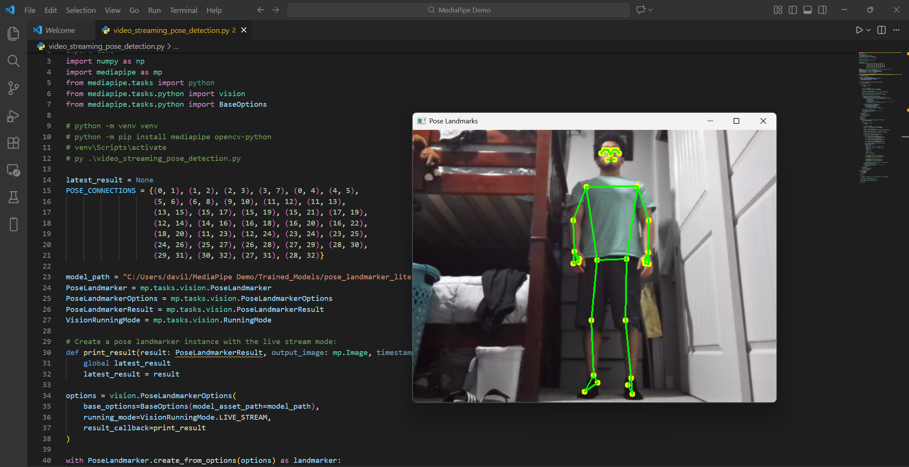
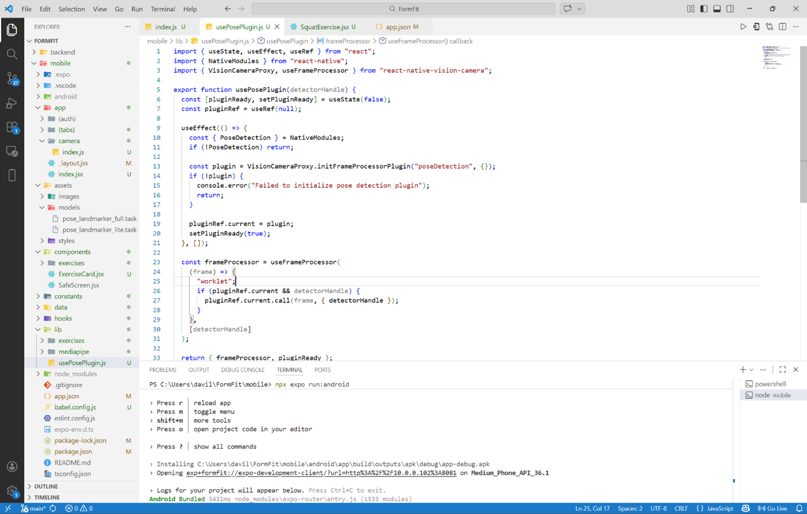
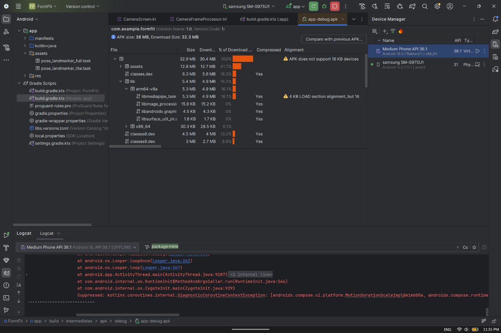
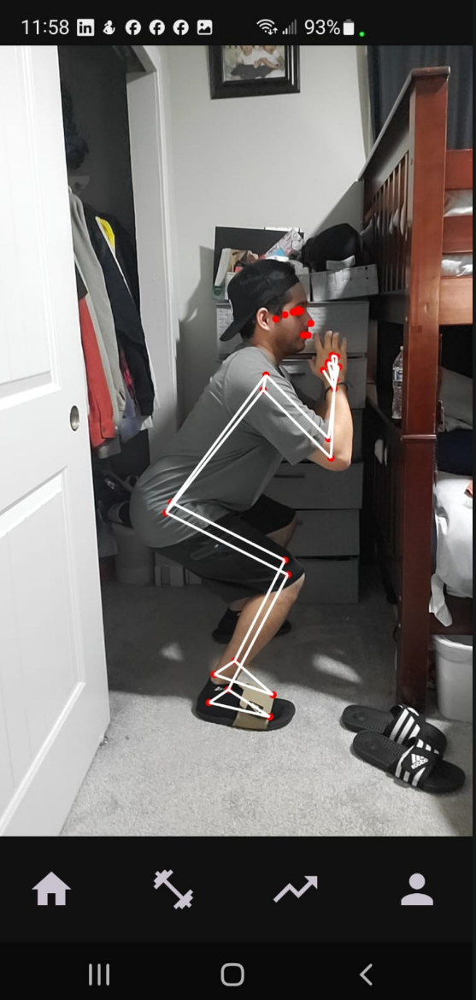
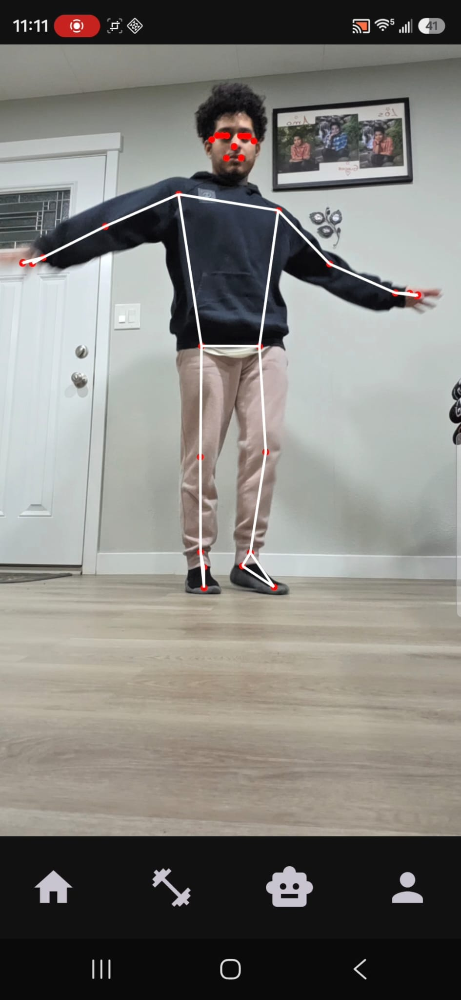
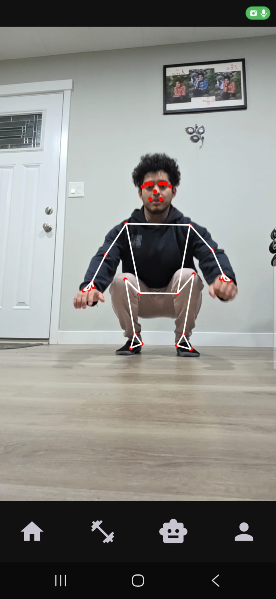

Architectural Diagram
Initial Architectural Diagram
At first, I was planning to create a mobile app with React Native and the MediaPipe Pose API that had a form-feedback feature and which gave personalized workouts to the user. The app was going to have a React Native frontend and a FastAPI backend. The frontend was solely going to be responsible for the user interface, while the backend was going to handle the real-time pose feedback logic and the data storage.

Revised Architectural Diagram
After doing some research and learning more about the technologies I was planning to use, I realized that using React Native and the MediaPipe Pose API might not be the best choice for my project. I decided to switch to using Kotlin for the frontend and the ML Kit Pose API for the pose detection and form feedback logic. I changed from having the form-feedback logic in the backend to having it in the frontend because I realized that it would be more efficient and would provide a better user experience. The backend is now responsible for data storage and retrieval, as well as handling the chatbot feature.

User Interface
UI with React Native
When I first started working on the user interface, I was using React Native and I had a very basic design in mind. I wanted to keep it simple and clean, with a focus on functionality rather than aesthetics. The UI was going to have a bottom navigation bar with four tabs:
- Home - Main screen where the user would land once they logged in
- Workout - Screen for viewing and selecting different workouts and where you can access the real-time form feedback feature
- Progress - Screen for tracking workout progress and viewing history
- Profile - Screen for viewing and editing user profile information

UI with Kotlin
After switching to Kotlin for the frontend, I had to redesign the user interface to fit the new technology. They look relatively the same in terms of design, but the main difference is that I replaced the progress tab with a chatbot tab. Therefore, the UI now has a bottom navigation bar with the following four tabs:
- Home - Main screen where the user would land once they logged in
- Workout - Screen for viewing and selecting different workouts and where you can access the real-time form feedback feature
- Chatbot - Screen for accessing the chatbot feature and ask it questions about different weightlifting topics
- Profile - Screen for viewing and editing user profile information

Pose Detection API
MediaPipe with Python
At the start of this project, I had initially planned to use the MediaPipe Pose API instead of the ML Kit Pose API. As I started learning how to use MediaPipe, I created a small python-based prototype that tracked joints in real-time. Although my project was going to be in JavaScript, this prototype was still extremely useful as it helped me understand the fundamentals of working with the MediaPipe API.

MediaPipe Code with ReactJS
As I started working with the MediaPipe API with ReactJS, I quickly ran into several issues, especially when working with the camera. Issues with camera permissions, inconsistent video feed initialization, and difficulty linking the camera stream to the pose detection pipeline made it hard to get the system working reliably. The reason why I have code instead of an image of the pose detection working as the artifact, is because I was not able to get the landmarks to track properly with the MediaPipe and ReactJS approach.

MediaPipe with Android Studio and Kotlin
Since I was having lots of issues with ReactJS, I decided to switch to android development using Android Studio and Kotlin. When I was about to finish setting up MediaPipe with the camera, I ran into another issue. The image format I was receiving was YUV and the format MediaPipe needs is RGB. I also faced compatibility issues with newer Android devices that use a 16KB memory page size, which MediaPipe did not fully support due to the lack of maintenance of the APIs library. These challenges, along with the unmaintained library, made it difficult to continue using MediaPipe.

ML Kit Pose API with Kotlin
Due to all the challenges I was facing with MediaPipe, and the massive time spent trying to debug the issues I kept running into with it, I decided to stop using the API, and switch to using the ML Kit Pose API. Since the camera setup stayed relatively the same, I spent most of my time learning how to use the ML Kit Pose API during this transition. Being able to finally set up the real-time tracking of the landmarks within my app was extremely rewarding. This change ultimately made development much smoother and allowed me to continue making steady progress on my application.


